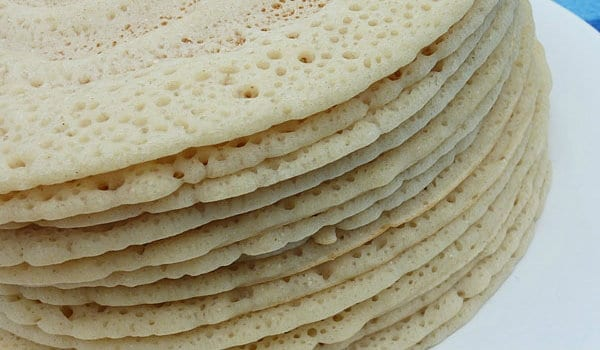

SOMALI ANJERO RECIPE

“Canjeero?!“ I hear you say. “I’ve heard of Injera, but never canjeero, are you sure you’re not confused?”.
Very sure! In fact, canjeero (sometimes called anjero, canjeelo,
lahoh or laxoox); and Injera are cousins.
Whilst Injera is the famous Ethiopian food and method of eating;
this is the Somali version, also a staple in Djibouti and Yemen,
and often found in Israel too.
INGREDIENTS
- 1 cup white corn flour
- ½ cup sorghum flour
- 1 Tbsp Instant dry yeast
- 4 cups self-raising flour
- ¼ cup sugar
- 1 tsp salt
- 4 cups lukewarm water
STEPS
- In a large bowl, mix the white corn meal, sorghum flour, yeast and half of the water,
making sure it is properly combined. Leave for one hour.
- After one hour add in the self-rising flour and sugar,
then slowly start adding the remaining water as you mix to get a smooth,
lump-less texture for your batter.
- The key to achieving the classic anjero taste is fermentation.
The mix should rest in a warm place to allow the fermentation to take place.
The minimum time would be a few hours but to achieve a more authentic,
sour anjero taste, you can let the batter ferment for up to two days.
For this recipe you can let the batter ferment overnight.
- In a non-stick frying pan on a medium heat,
ladle the batter mix into the pan according to preferred portion size,
making sure that the batter spreads fully across the surface of the pan.
- Cover the pan and cook for a few minutes per portion.
The desired colour is a golden brown,
and the texture should be spongy with no liquid remaining.
- Plate the pancake and continue process until you each person has around 3 each.
- Refrigerate leftover batter and use for lunch or for tomorrow’s breakfast.